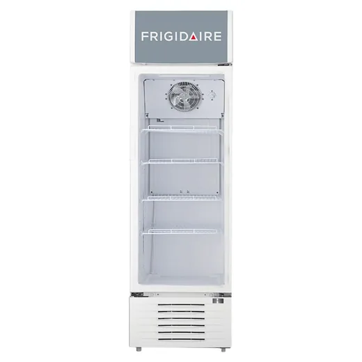
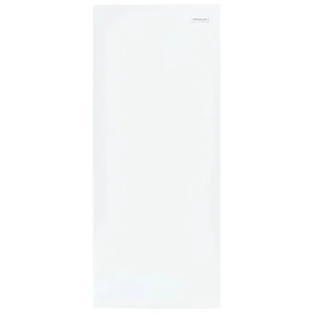
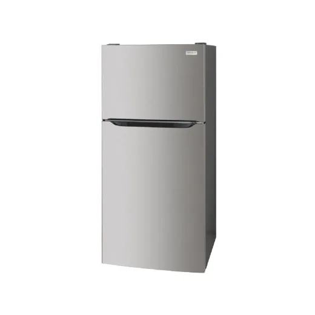
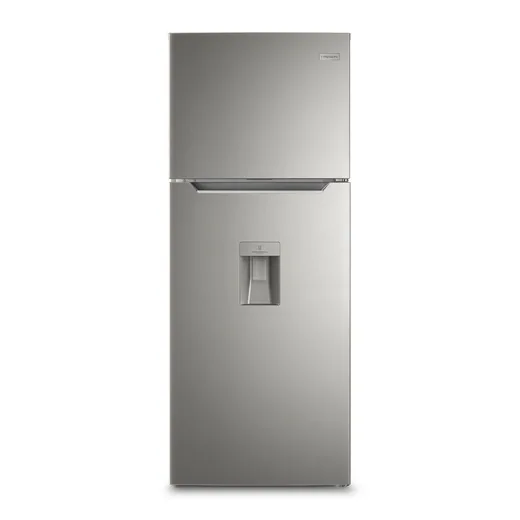
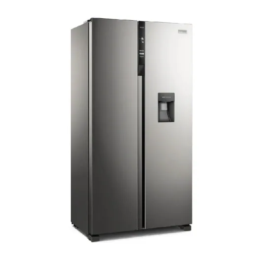

Inicio › Refrigeradoras y congeladores

Frigidaire · Modelo FRTE1622AS
Refrigeradora Frigidaire · 16 pies · Top Mount · FRTE1622AS
L 14,390
Más barato en Diunsa · ahorras hasta L 1,409 frente a la tienda más cara
Precio en cada tienda
| Tienda | Precio | Antes | Disponibilidad | |
|---|---|---|---|---|
| Diunsa | L 14,390 | Disponible | Ver en tienda › | |
| Lady Lee | L 14,999 | Disponible | Ver en tienda › | |
| Elektra | L 15,799 | Disponible | Ver en tienda › |
Precios referenciales tomados de cada tienda el 21 de noviembre de 2026. El precio válido es el que muestra la tienda al comprar.
Historial de precio
Lo seguimos desde el 1 de noviembre. Precio más bajo registrado: L 14,390 en Diunsa (2 de noviembre), igual que hoy. Cambios de precio registrados: 3.
Características
| Tamaño (Pies) | 16 |
|---|---|
| Bono | 1000 |
| Especificación | Valor |
| Marca | Frigidaire |
| Modelo | FRTE1622AS |
| Tipo | Refrigeradora con congelador superior |
| Tipo de diseño | Top Mount |
| Capacidad | 16 Pies cúbicos |
| Sistema de Enfriamiento | No Frost (Evita la formación de escarcha y hielo en las paredes) |
| Color / Acabado | Acero Inoxidable |
| Sistema de control | Control de temperatura analógico/mecánico interno ajustable |
Descripción
La Refrigeradora Frigidaire FRTE1622AS de 16.0 pies³ en acero inoxidable combina rendimiento eficiente con un diseño clásico de congelador superior, ideal para cocinas, departamentos o espacios compactos.
Capacidad total de 16.03 pies³ con 12.36 pies³ para alimentos frescos y 3.67 pies³ para congelados.
Certificación ENERGY STAR que ayuda a reducir el consumo eléctrico anual (~347 kWh).
Iluminación LED interior para una visibilidad clara de tus alimentos.
Puerta reversible, adaptándose a la disposición de tu espacio.
Diseño robusto y fácil de usar con estantes de vidrio resistentes y bin de frutas y verduras.
Compatible con kit de máquina de hielo opcional (no incluido).
Perfecta para hogares que buscan eficiencia, almacenamiento organizado y bajo consumo energético.
Otros refrigeradoras y congeladores Frigidaire

Refrigeradora Frigidaire · 8.5 pies · FRH08T3KPWL 14,990En Diunsa
Congelador Frigidaire · 13 pies · VerticalL 14,999En Lady Lee Refrigeradora Frigidaire · 12 pies · Top Mount · FRTM32G3HPSL 11,890En 2 tiendas · más barato en Diunsa
Refrigeradora Frigidaire · 12 pies · Top Mount · FRTM32G3HPSL 11,890En 2 tiendas · más barato en Diunsa Congelador Frigidaire · 11 pies · FFH11S3N5AWL 11,799En Elektra
Congelador Frigidaire · 11 pies · FFH11S3N5AWL 11,799En Elektra
Refrigeradora Frigidaire Silver FRT18F3N5BIL 16,999En Lady Lee
Refrigeradora Frigidaire · 12 pies · Top Mount · FRTS12K3HTSL 11,190En 2 tiendas · más barato en Diunsa Refrigeradora Frigidaire · 9 pies · Top Mount · FRT09F3N4BSL 10,890En 3 tiendas · más barato en Diunsa
Refrigeradora Frigidaire · 9 pies · Top Mount · FRT09F3N4BSL 10,890En 3 tiendas · más barato en Diunsa
Refrigeradora Frigidaire · 18.7 pies · Side by Side · FRSA19K2HVGL 17,990En 3 tiendas · más barato en Diunsa